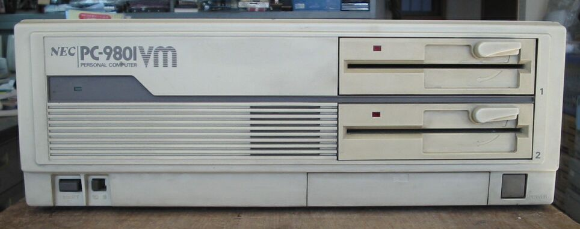
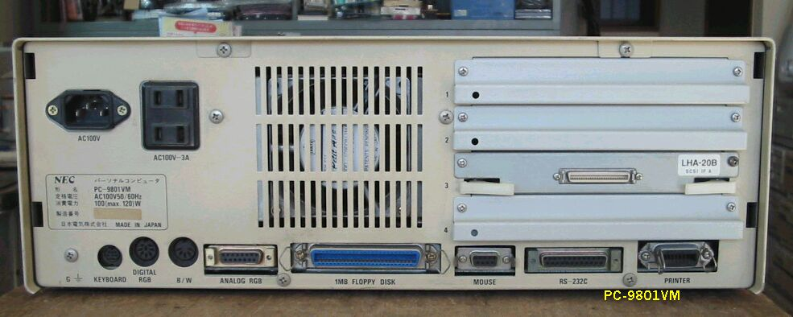
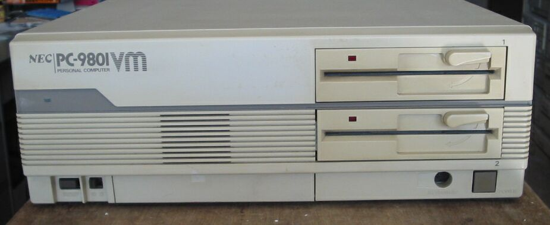
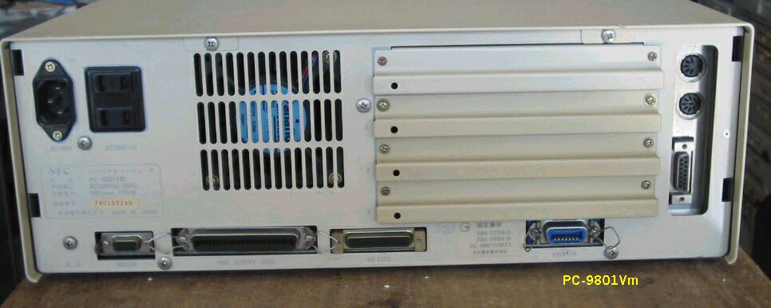
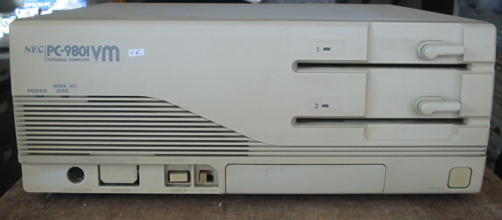
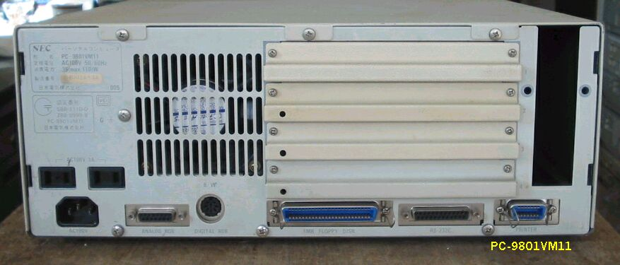

PC9801Vm
PC9801Vm(初期型)の正面

PC9801Vmの背面(初期型) グラフィックがオンボードです。

PC9801Vm(後期型)の正面 FDDの右側が少し違います。

PC9801Vmの背面(後期型) グラフィックボードが独立しました。

PC9801VM11の正面 ほとんどRXと同じです。

PC9801VM11の背面。

PC9801Vmの仕様
型 名 ：PC-9801VMO(初期型)
価 格 ：295000
発表日 ：85/07
出荷日 ：85/07
CPUクロック ： V308M.10MHz切り替え
ROM ： N88-BASIC(86)及びモニタ96KB
標準RAM ： 384KB
最大ユーザーズメモリ ： 640KB
グラフィックVRAM容量 ： 192KB
グラフィックVRAM画素数： 640*400
グラフィックVRAM色数 ： 4096色中8色2画面(PC-9801-24使用時16色)
サウンドVRAM ：
テキストVRAM ： 12KB
拡張スロット数 ： 4
拡張スロット電源容量 + 5V ：0.5A
+12V ：0.05A
-12V ：0.07A
内蔵インタフェースコネクタ：1MFDDI/F プリンタI/F RS-232CI/F
：マウスI/F B/WCRTI/F デジタルCRTI/F
：アナログCRTI/F
漢字 ：標準:第一、第二オプション:拡張
サウンド機能 ：オプション
カレンダ時計 ：μPD1990使用年サポートなし
ＶＣＣＩ適合 ：
使用条件 電圧 ：AC100V±10%
周波数：50/60
温度 ：10〜35
湿度 ：20〜80%(結露なし)
消費電力 標準 (W) ：80
最大 (W) ：120
エネルギー消費効率 (W) ：80
外形寸法 本 体 (mm) (W)：420 (D)：345 (H)：150
キーボード(mm) (W)：470 (D)：195 (H)：38
重量 本体 (Kg) ：8.3
型 名 ：PC-9801VM21(後期型) このモデルになると、グラフィックボードが独立して、強化されています。
価 格 ：390000
発表日 ：86/11
出荷日 ：86/11
CPUクロック ： V308M.10MHz切り替え
ROM ： N88-BASIC(86)及びモニタ96KB
標準RAM ： 640KB
最大ユーザーズメモリ ： 640KB
グラフィックVRAM容量 ： 256KB
グラフィックVRAM画素数： 640*400
グラフィックVRAM色数 ： 4096色中16色2画面
サウンドVRAM ：
テキストVRAM ： 12KB
拡張スロット数 ： 4
拡張スロット電源容量 + 5V ：0.5A
+12V ：0.05A
-12V ：0.07A
標準実装ドライブ FDD ：5インチ1M/640KFDD2-DRIVE
内蔵インタフェースコネクタ：1MFDDI/F プリンタI/F RS-232CI/F
：マウスI/F B/WCRTI/F デジタルCRTI/F
：アナログCRTI/F
漢字 ：標準:第一、第二オプション:拡張
サウンド機能 ：オプション
カレンダ時計 ：μPD4990使用年サポートあり
ＶＣＣＩ適合 ：基準レベル10
使用条件 電圧 ：AC100V±10%
周波数：50/60
温度 ：10〜35
湿度 ：20〜80%(結露なし)
消費電力 標準 (W) ：100
最大 (W) ：120
エネルギー消費効率 (W) ：100
外形寸法 本 体 (mm) (W)：420 (D)：345 (H)：150
キーボード(mm) (W)：470 (D)：195 (H)：38
重量 本体 (Kg) ：11.6
(2004/01/26記)
PC-9801のページに戻る